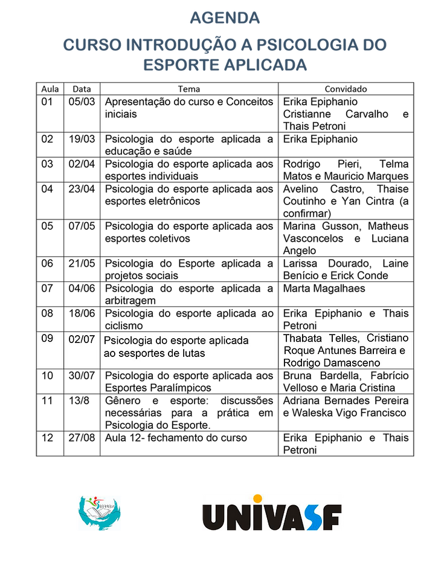

O Curso de Introdução à Psicologia do Esporte Aplicada, promovido pelo Núcleo de Estudos e Pesquisa em Fenomenologia Esporte e Educação (Nepfee), está na sua quinta aula. Vinculado à Pró-Reitoria de Extensão da Univasf e com coordenação da Prof.Dra. Erika Epiphanio e da vice-coordenadora Prof.Ma.Thaís Petroni, é distribuído em doze aulas.
“Tivemos mais de 200 inscrições, mas por se tratar de um curso de Psicologia do Esporte Aplicada, foram aprovadas inscrições de profissionais e estudantes de Psicologia. Já o preenchimento das 50 vagas teve como critério favorável ser profissional do norte nordeste, ou profissionais e estudantes de outras instituições públicas federais e associados da ABRAPESP”. informou a coordenadora do curso
Esta parceria com a ABRAPESP levou para ministrar o curso, praticamente todos da diretoria e de algumas comissões. Veja a agenda do curso.
